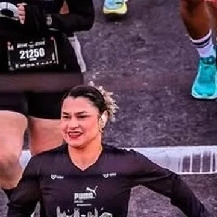
Meia maratona
Não corria 5 km sem dor. Correu a meia maratona que tinha marcado.
Tatiane · jan a jun 2026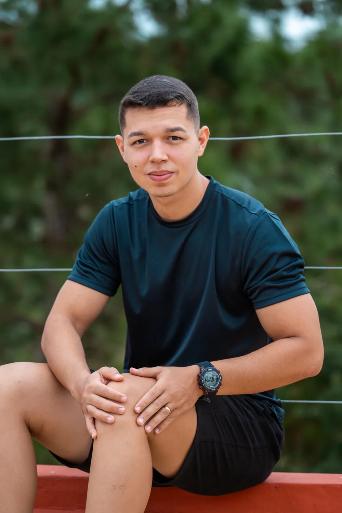
Fichas prontas para fazer em casa ou na musculação, em 3 fases, e uma variação pronta para cada exercício que doer. O mesmo caminho que levou mais de 600 alunos de volta ao treino e à corrida sem dor.
Se você segura no corrimão para descer escada, se abaixa de lado para pegar algo no chão e sente a dor no dia seguinte ao treino, o problema não é falta de exercício.
Você já ouviu "para de treinar e espera passar". Parou, a dor sumiu, e voltou no primeiro dia em que você se mexeu.
Aí tentou fortalecer por conta própria, copiando treino da internet, e a dor aumentou.
Isso acontece porque quase todo mundo tenta fortalecer um joelho que ainda está inflamado. E joelho inflamado não aceita carga, por mais certo que seja o exercício.
CUIDADO: a ordem importa mais do que o exercício.
A dor no joelho não vem do nível de desgaste que aparece no seu laudo. Ela vem da inflamação. Tem aluno com desgaste grau IV treinando sem dor, e aluno com grau I que mal consegue descer escada.
Primeiro desinflamar + depois fortalecer + por fim estabilizar = o seu joelho de volta ao dia a dia.
Exercício não regenera cartilagem. Mas trata, desinflamando. É exatamente isso que o plano faz, uma fase de cada vez.

Não corria 5 km sem dor. Correu a meia maratona que tinha marcado.
Tatiane · jan a jun 2026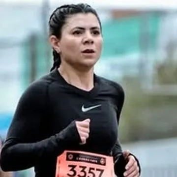
Condropatia grau IV e proibida de correr. Correu as duas provas que tinha marcado.
Aluna corredora · jul a ago 2025Um médico indicou cirurgia. Começou a fortalecer em março. Hoje não sente nada.
Priscila · desde mar 2026Chegou com dor em junho, com o teste marcado para julho. Foi aprovada.
Graziela · jun a jul 2026"Obrigada ao meu personal, que acreditou em mim. Após um ano, mais um pódio sem dor."
Aluna · set 2026Começou em dezembro, num projeto que praticamente zerou as dores dele.
Ademilson · desde dez 2025Casos publicados por Raí Alves em @raialves.treinador, resultado do acompanhamento individual com ele. Resultados variam de pessoa para pessoa e dependem do quadro, da adesão aos treinos e do acompanhamento profissional adequado.
O Protocolo Joelho sem dor é para você que…
O gesto que mais denuncia o joelho inflamado é o primeiro que o plano ataca.
Com o quadril forte segurando a articulação no lugar.
Com amplitude e carga subindo na hora certa.
Uma variação pronta, para trocar o exercício em vez de largar o treino.
Exercícios de baixo impacto, que acalmam a articulação em movimento.
Correr, malhar, passar o dia em pé. A Fase 3 prepara o joelho para isso.
Cada fase dura de 30 a 60 dias e prepara o joelho para a próxima. Pular uma delas é o jeito mais rápido de voltar para o começo.
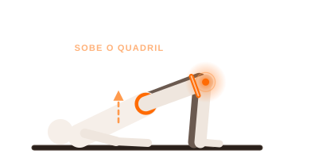
Para quem está em crise de dor. Exercícios de baixo impacto, que trabalham o quadril e a parte de trás da coxa sem sobrecarregar a frente do joelho. É aqui que a inflamação cede, sem você ficar parado.
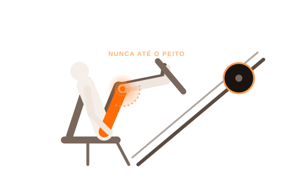
Com a articulação mais calma, entram os exercícios que dão força para a coxa: leg press, agachamento e, em alguns casos, a extensora com ângulo de proteção. A amplitude vai aumentando, e a carga também.
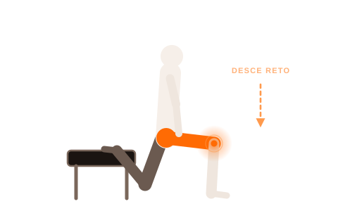
Prepara o joelho para a vida real: subir escada, agachar, carregar peso, voltar ao esporte. O treino fica praticamente sem limitações, e você já pode testar exercícios como o afundo e o búlgaro, que trabalham muito o quadril.
O que fortalece o joelho é o músculo certo trabalhando no ângulo certo, não o aparelho. Por isso cada fase vem com as duas fichas.
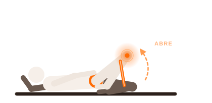
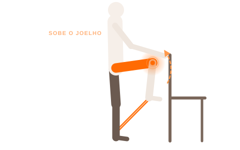
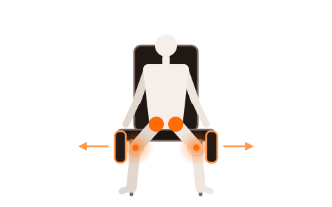
Dentro do plano, cada exercício que costuma incomodar o joelho vem com a orientação do que fazer e com as variações para colocar no lugar. Veja como funciona:
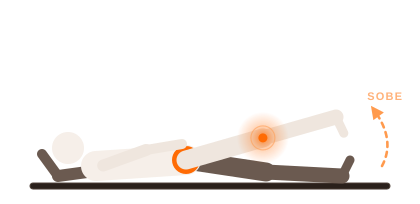
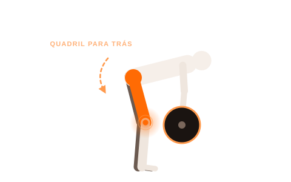
A regra que vale para todo o plano: a dor é o seu limite. Desça só até onde não dói.
O material que explica, sem complicação, o que é a condropatia patelar, por que a dor vem da inflamação e não do desgaste, e as regras de segurança que valem para todo o treino. Com as fichas e cada exercício ilustrado, para consultar na hora de treinar.
Pagamento único, sem mensalidade. O plano completo nas 3 fases, em casa ou na musculação, com 1 ano de acesso.
Entre, assista aos vídeos e comece a Fase 1. Se em até 7 dias depois da compra você sentir que não é para você, é só pedir o reembolso e você recebe 100% do valor de volta, sem pergunta e sem burocracia.
Eu prefiro devolver o seu dinheiro a ter alguém frustrado carregando o meu nome.
O Raí Alves é treinador e escolheu se especializar em uma coisa só: fortalecimento de joelho. Todo dia ele recebe mensagem de gente que fortaleceu do jeito errado, que repousou por meses e voltou a doer no primeiro treino, ou que saiu de um consultório com a palavra cirurgia na cabeça e nenhuma alternativa na mão.
Mais de 600 pessoas já passaram pelo trabalho dele e voltaram a treinar, correr e passar no teste físico sem dor. O Protocolo Joelho sem dor reúne o caminho que ele usa com os alunos, organizado em 3 fases, para você poder começar hoje, em casa ou na musculação, sem depender da agenda dele.
"Tenho a convicção que aquilo que faço é prudente, honesto e que transforma a realidade daqueles que decidiram confiar nesse trabalho."Raí Alves · publicado no perfil em 01/09/2026
Protocolo Joelho sem dor · Raí Alves · @raialves.treinador
Todos os direitos reservados